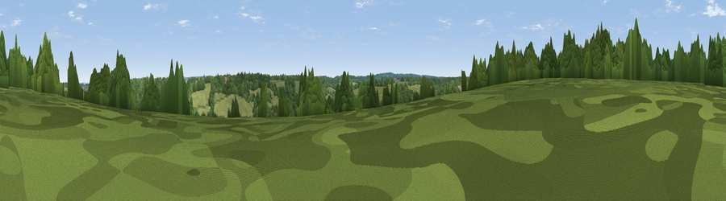

Viewpoint near Chipstead
#45024 in England · top 80% of its area beats it · near Chipstead · open accessWhere it is
The exact computed spot (TQ 26775 57475). Click the marker for map links.
Public access: this spot lies on mapped open-access land (CRoW Act 2000) — you may roam here on foot. Computed from Natural England's CRoW access layer and OpenStreetMap rights of way — not the legal definitive map. Always verify locally.
The view, rendered

A 360° render of this exact spot computed from the terrain model, tree cover and land cover — summer colours, afternoon light, calibrated against photographs of famous viewpoints. Real trees, hedges and buildings will differ in detail.
The panorama
Grey silhouette: terrain skyline in each direction (720 bearings, Earth curvature and refraction included). Dashed green: skyline with trees (+15 m) and buildings (+8 m) as obstacles. Blue strip: how far the ground is visible on each bearing.
Where the view opens
Wedge length = distance to the farthest visible ground on that bearing (vegetation-aware). Rings at 10, 25 and 50 km.
What fills the view
51% woodland · 43% grassland · 3% built-up · 2% cropland
Angular shares of the visible panorama (visual magnitude), not map area. Landscape diversity 0.39 (0–1 Shannon).
Key numbers
More beautiful places nearby
The staircase of upgrades: each row has a higher view potential than everything closer. Driving times are estimates from straight-line distance, calibrated against real road routing — check an actual route before setting out.
| Place | Direction | Drive | Score |
|---|---|---|---|
| Viewpoint near Old Coulsdon | E · 3 km | ~8 min | 16.7 |
| The Mound | W · 4 km | ~10 min | 27.2 |
| Viewpoint near Tattenham Corner | WNW · 5 km | ~11 min | 30.5 |
| Reigate Hill | S · 5 km | ~11 min | 46.0 |
| Viewpoint near Reigate | SSW · 5 km | ~12 min | 48.6 |
| Colley Hill | SSW · 6 km | ~12 min | 52.1 |
| Viewpoint near Lower Kingswood | SSW · 6 km | ~13 min | 67.7 |
| Viewpoint near Coldharbour | SW · 19 km | ~32 min | 70.0 |
51.30229, -0.18284 · source: screening · position refined by local search. Computed location — check access rights before visiting.